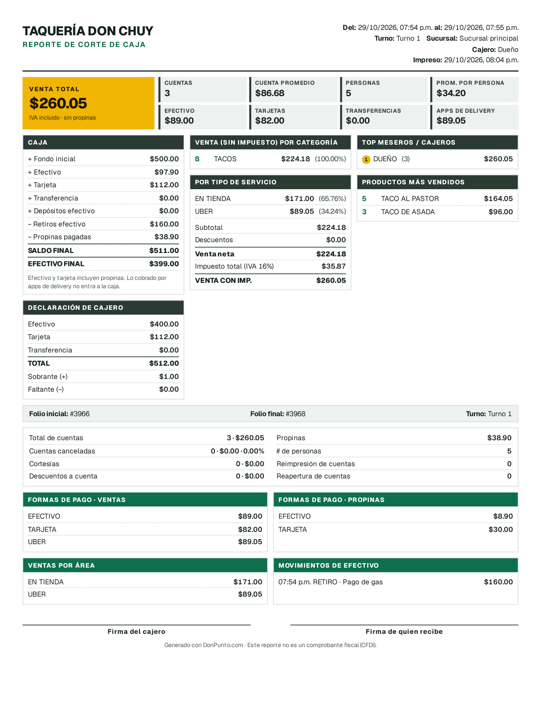
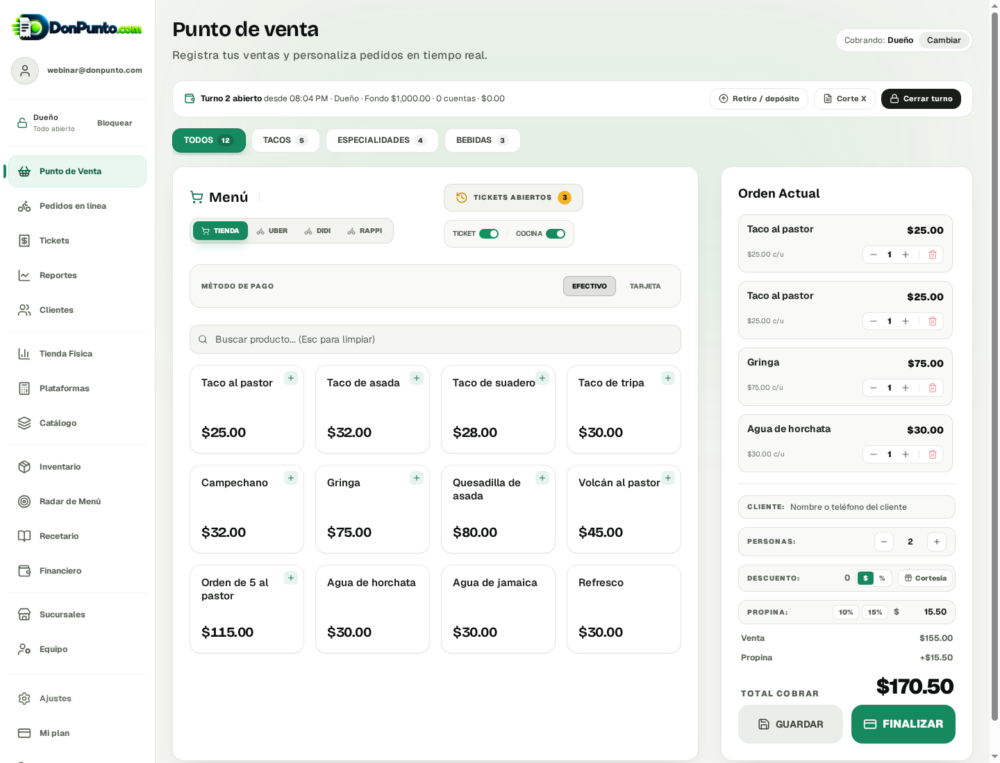
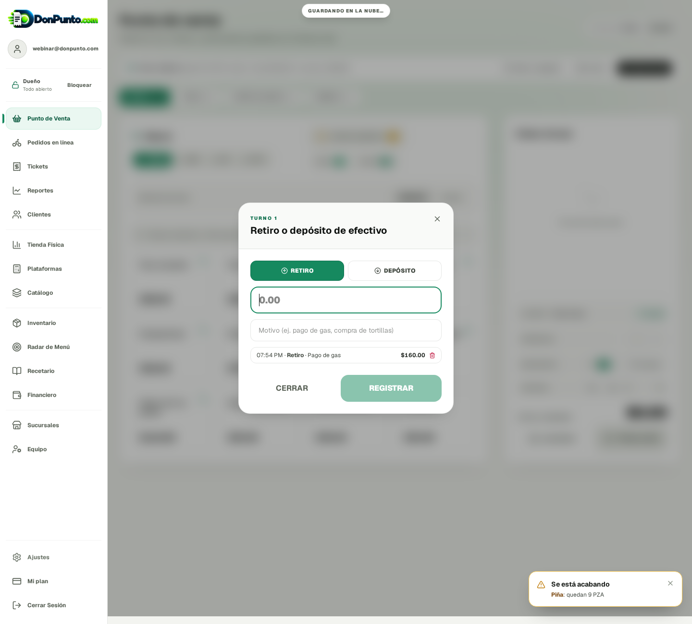
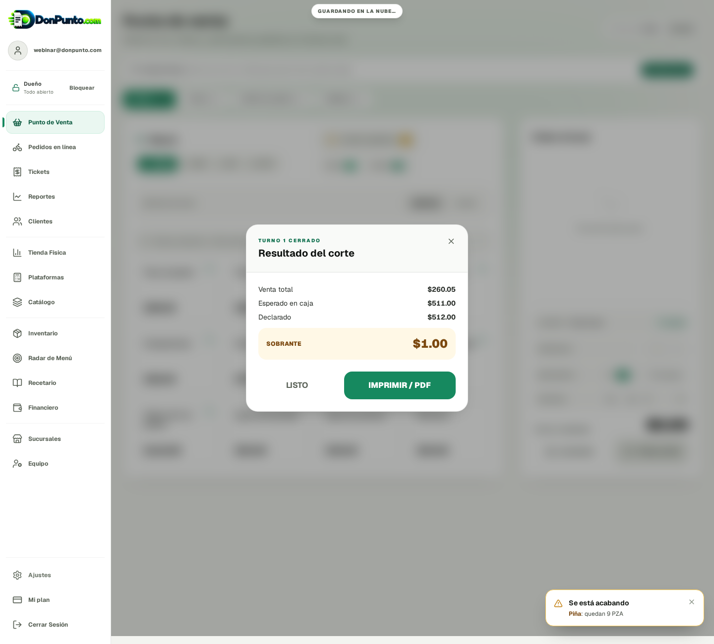
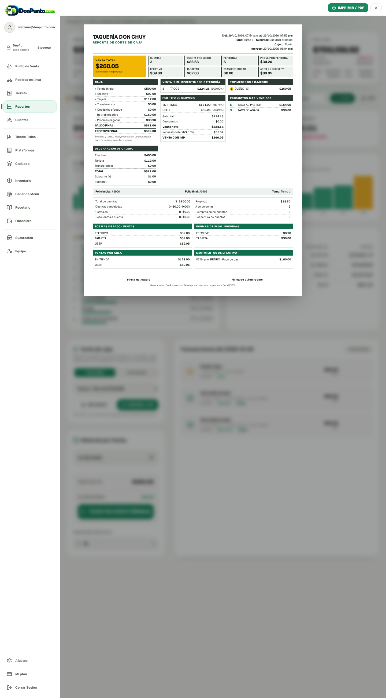

Corte de caja completo — vista previa
Prueba hecha en la cuenta del webinar (Taquería Don Chuy). Todavía no está publicado en donpunto.com.
1. Así sale el corte (hoja carta / PDF)

2. Punto de venta: turno abierto, personas y propina

3. Retiros y depósitos de efectivo

4. Cierre: el cajero declara y el sistema dice si sobra o falta

5. Reportes → Corte de caja (por turno o por fechas)
